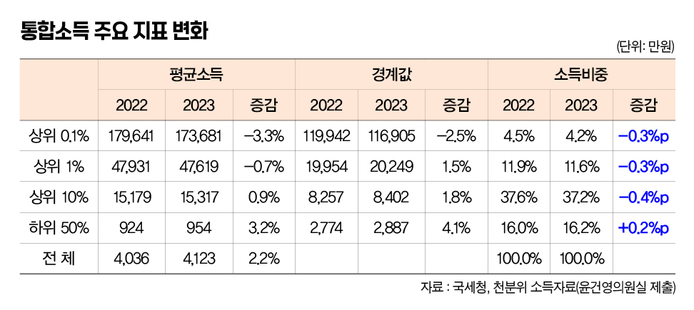
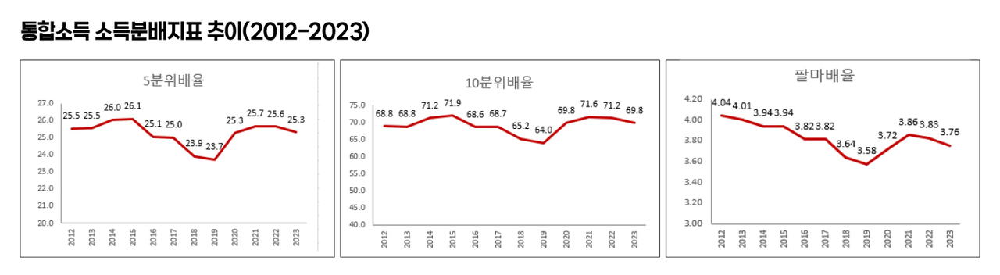
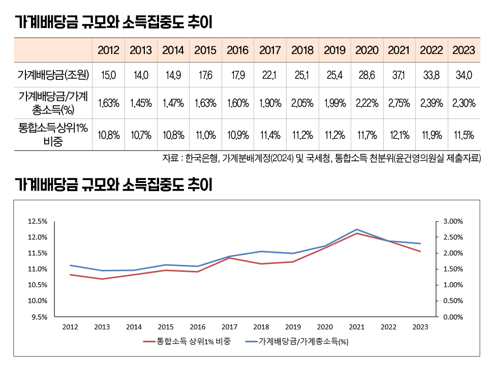
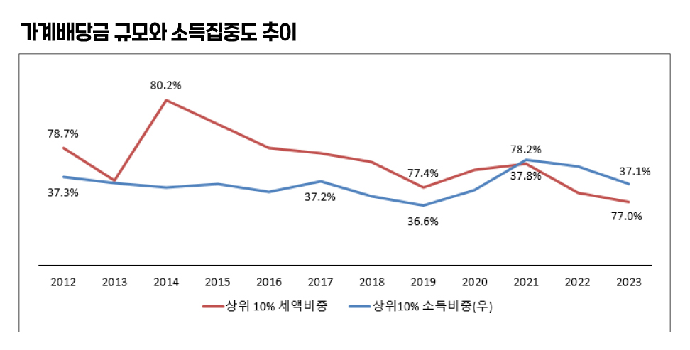

박영삼의 통계로 보는 노동
국세청 통합소득 천분위 분석 결과 … 상위 1% 소득 감소로 소득집중도 하락
2023년 귀속분 소득에 대한 국세청 소득천분위 자료들이 국회에 제출되고 있다. 소득천분위 자료는 근로소득 연말정산 인원과 종합소득 신고자를 인별로 합산해 소득순으로 백분위를 구분한 다음 최상위 1%를 다시 0.1% 구간으로 세분해 집계한 것을 말한다.
상위 1%·상위 10% 소득비중 각각 11.6%·37.2%
국세청이 더불어민주당 윤건영 의원실에 제출한 2023년 귀속본 근로소득·종합소득·통합소득 천분위 자료를 분석해본 결과, 고소득층이 전체 소득에서 차지하는 비중이 2022년에 이어 2023년에도 감소하는 등 개인분배지표가 개선된 것으로 나타났으나, 2024년부터 시작된 배당금 증가 현상과 감세 영향 등으로 앞으로는 추가 개선이 어려울 것으로 예상됐다.
우선 통합소득 최상위 0.1%(평균소득 17억3천681만원, 소득경계값은 2억249만원) 계층의 소득이 전체 소득에서 차지하는 비중은 4.2%로, 2022년의 4.5%에 비해 0.3%포인트 감소했다. 상위 1%(평균소득 4억7천619만원, 경계값 2억249만원)의 소득비중도 11.9%에서 11.6%로, 상위 10%(평균 1억5천317만원, 경계값 8천402만원)의 소득비중은 37.6%에서 37.2%로 각각 ?0.3%포인트, 0.4%포인트 하락했다.

통합소득 5분위배율과 10분위배율은 각각 25.6배에서 25.3배로, 71.2배에서 69.8배로 격차가 줄었으며, 상위 10%와 하위 40%의 소득배율을 뜻하는 팔마배율도 8.76배에서 7.94배로 개선된 것으로 나타났다. 하지만 코로나19 사태가 발생했던 2020년 수준 정도이고 가장 양호한 소득분배 지표를 보였던 2018~2019년 시기 수준을 회복하는 정도에는 한참 못 미친다.

지난해 말 결과가 발표된 통계청의 가계금융복지조사에서 2023년 말 기준 소득분배지표가 2년 연속 개선되고 있는 데 대해, 최상위 고소득층 표본이 누락될 가능성이 높다는 점을 들어 국세청 천분위 자료를 확인할 필요가 있었는데, 초고소득층까지 포괄하는 국세청 소득통계에서도 비록 개인단위 소득이긴 하지만 분배지표가 개선되고 있다는 것이 재확인된 것이다.
가계배분 배당금 규모와 비중, 소득집중도에 영향 커
하지만 몇 가지 요인을 들여다보면 이같은 추세가 앞으로도 지속될 것으로 예상하기는 어렵지 않나 생각된다. 초고소득층의 경우 재벌대기업 총수나 고위임원, 그리고 대형사업을 운영하는 사업소득자들이 대부분인데 한국은행 가계분배계정 통계를 보면 이들의 주된 소득원천인 사업소득과 임원보수, 스톡옵션, 배당금 등이 감소하거나 정체했던 사실을 확인할 수 있다. 2023년 통합소득 최상위 0.1%의 총소득이 46.7조원으로 2022년의 47.1조에 비해 0.9% 감소하는 일이 처음으로 발생했고 2022년에도 이들의 총소득 증가율은 0.5%에 그쳤다. 가계분배계정을 확인해보면 큰 규모의 사업소득이 발생하는 준법인기업 소득인출액이 2020년 이후 3년 연속 감소했고, 2021년에 37.1조에 달했던 가계로 지급된 배당금 총액이 2022년에는 33.8조원으로 2013년 이후 처음으로 감소한데 이어 2023년에도 34조원 규모로 0.6% 증가에 그쳐, 2013년 이후 가장 낮은 증가율을 기록했다.
최근 수년간 가계로 분배되는 배당금 비중이 증가하면 국세청의 상위 1% 소득 점유비중이 증가하고, 반대로 배당금 비중이 하락하면 상위 1%의 소득비중도 하락하는 동조현상을 보이고 있다. 배당금은 전체 국민총소득에서 차지하는 비중이나 절대규모는 크지 않지만 개인과 가계에 배분되는 소득으로는 적지 않은 규모이며 최상위 소득층에게 집중 배분되고 그것이 최상위층의 주된 소득원이 된다는 점에서 전체적인 소득분배에 연쇄적으로 영향을 미치게 된다.

그런데 주춤했던 배당금 증가세는 지난해부터 이미 반전 조짐이 나타나고 있다. 2024년 국내 상장사들의 배당금 총액은 31조원으로 2023년의 28조원에 비해 10% 이상 증가한 것으로 확인되고 있다. 이재용 삼성전자 회장이 3천465억원을 배당받아 1위를 기록했는데 상위 30위 안에 든 대주주들의 배당총액이 17.8조원으로 전체 배당금의 60% 가까이 차지한다. 이러한 배당금의 증가는 결국 개인소득 분배에서 최상위층의 점유비중을 다시 증가시키는 요인으로 작용할 수 있다.
1인당 소득세 처음으로 감소, 소득 높을수록 감소폭 커
이와 함께 2021년 이전까지 소득세 최고세율 인상 등의 영향으로 조세에 의한 소득분배 개선 효과가 커졌는데 최근 들어 반대 방향의 움직임이 확인되고 있다. 상위 10%의 소득점유 비중이 2021년 37.8%에서 2023년 37.1%로 하락했지만 2019년의 36.6%에 비해서는 여전히 높은 수준에 있지만, 상위 10%의 소득세 점유비중은 2014년 80.2%로 정점을 기록한 뒤 추세적으로 하락하면서 2023년에는 77.0%로 역대 최저치를 나타내고 있다.
더구나 2023년에 와서 고소득층일수록 소득세 감소율이 높아지는 역진적인 현상이 나타나고 있다. 2023년 최상위 0.1%의 소득은 -3.3% 감소했는데 소득세 감소율은 -4.8%에 이른다. 상위 1%의 소득감소율은 -0.7%인데 소득세 감소율은 -2.4%에 이른다. 상위 10%와 상위 20%의 경우 소득은 각각 1.3%, 1.9%로 플러스 증가를 기록했는데 소득세는 각각 ?1.6%, -1.5% 감소한 것으로 나타났다. 하위 50%만 유일하게 소득증가율 3.3%보다 훨씬 높은 6.5%의 소득세 증가율을 보였다. 이것은 앞으로 조세의 소득분배 개선 효과가 약화될 수 있다는 것을 의미한다.

윤석열 정부는 출범 이후 법인세, 소득세 감세를 추진해 왔다. 그 혜택은 기업을 거쳐 초고소득층에 소득을 더 집중시키고, 조세의 분배개선 효과를 감소시키며, 나아가 복지에 지출할 수 있는 재정여력까지 훼손할 위험성이 매우 크다.
고려대 노동문제연구소 노동데이터센터장 (youngsampk@gmail.com)